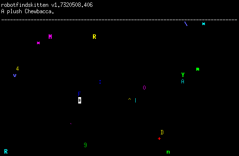

In this game, you are robot (#). Your job is to find kitten. This task is complicated by the existence of various things which are not kitten. Robot must touch items to determine if they are kitten or not. The game ends when robotfindskitten. Alternatively, you may end the game by hitting the Esc key. See the documentation for more information.

Évek óta a robotfindskitten az egyik kedvenc játékom. Egyszerű, mint a faék, nyugis ugyanakkor vicces. Azt hiszem nem véletlenül nevezik „zen simulation”-nek.
Kb. minden létező platformra portolták már – kezdve az Apple II-től a C64-en át az Androiddal bezárólag –, szóval nagy eséllyel játszható azon az eszközön, amin most a sidenote-ot olvasod.
A FINAL THOUGHT
---------------
"Day and night I feverishly worked upon the
machine, creating both a soul which could desire
its goal, and a body with which it could realize
it. Many who saw my creation called it an
abomination, and denied me grant money. But they
could not dissuade me from my impossible task. It
was a spectre that tormented me always, a ghost I
had to give a form and a life, lest it consume me
from the inside. And when at last my task was
done, when the grey box on wheels was complete and
when it, as well as I, knew what had to be done, I
felt deep sympathy for the machine. For I had not
destroyed the phantom, but merely exorcized it
into another body. The robot knew not why this
task had to be performed, for I could not imbue it
with knowledge I did not myself posess. And at the
same time, I felt a sweeping sense of relief sweep
over me, that somehow, the dream that had driven
me for my entire life had come one step closer to
fruition. "As I vocally activated the robot, I
realized that it was following my instructions,
but not out of any desire to obey me. Had I
remained silent, it would have performed
exactly the same operations. We were two beings
controlled by the same force now. And yet, seeking
vainly to hold some illusion of control over the
machine I thought I had created, I gave my final
command.
"`GO!' I told the box as it began to roll out of
my workshop into the frozen desert beyond. `FIND
KITTEN!'"
--The Book of Found Kittens, pages 43-4,
author unknown
Csodálatos megfogalmazás.